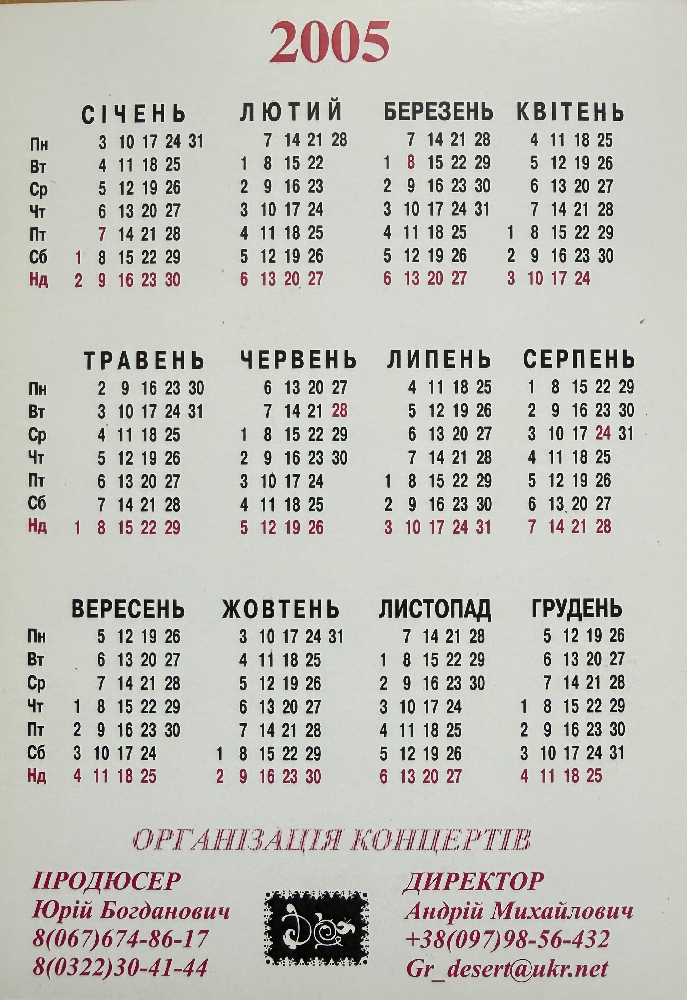

Dessert Promotional Calendar (2005) – Uliana Latyk

Basic Information
| Material Type | Promotional Calendar |
| Group | Dessert (Десерт) |
| Group Members Featured | Uliana Latyk and Mariana Krylyk (Мар'яна Крилик) |
| Current Stage Name | Ana Danch |
| Calendar Year | 2005 |
| Language | Ukrainian |
| Archive Category | Photos / Promotional Material |
| Preserved Sides | Front and Back |
Description
This preserved promotional calendar from 2005 documents the Ukrainian group Dessert (Десерт) and features group members Uliana Latyk and Mariana Krylyk (Мар'яна Крилик).
Uliana Latyk is now known professionally as Ana Danch. The calendar is therefore preserved as part of the visual documentation of Ana Danch’s early artistic career during her period as a member of Dessert.
The front side contains a promotional photograph of the two group members together with the printed group name «ДЕСЕРТ».
The reverse side contains a complete Ukrainian-language calendar grid for 2005 and a section headed «ОРГАНІЗАЦІЯ КОНЦЕРТІВ». It preserves printed contact information together with credits identifying Юрій Богданович as producer and Андрій Михайлович as director.
This material is documented as a group promotional item and is not presented as a solo Ana Danch promotional release.
Archive Information
| Original Name | Uliana Latyk |
| Current Stage Name | Ana Danch |
| Group | Dessert (Десерт) |
| Other Group Member Featured | Mariana Krylyk (Мар'яна Крилик) |
| Year | 2005 |
| Archive Category | Photos / Promotional Material |
| Archive Material | Promotional Calendar |
| Preserved Material | Two-sided promotional calendar |
Credits
| Group | Dessert (Десерт) |
| Group Members Featured | Uliana Latyk and Mariana Krylyk |
| Uliana Latyk | Now known professionally as Ana Danch |
| Printed Producer Credit | Юрій Богданович |
| Printed Director Credit | Андрій Михайлович |
Source Information
| Source Type | Original Promotional Calendar |
| Group Name Printed | ДЕСЕРТ |
| Calendar Year | 2005 |
| Group Members Featured | Uliana Latyk and Mariana Krylyk |
| Printed Section | ОРГАНІЗАЦІЯ КОНЦЕРТІВ |
| Producer Credit | ПРОДЮСЕР Юрій Богданович |
| Producer Telephone | 8(067)674-86-17 |
| Producer Telephone / Contact | 8(0322)30-41-44 |
| Director Credit | ДИРЕКТОР Андрій Михайлович |
| Director Telephone | +38(097)98-56-432 |
| Printed E-mail | gr_desert@ukr.net |
| Publisher | Not identified in the preserved material |
| Printing House | Not identified in the preserved material |
| Photographer | Not identified in the preserved material |
Archive Materials
Front side of the 2005 Dessert promotional calendar featuring group members Uliana Latyk and Mariana Krylyk.

Reverse side with the 2005 calendar grid, concert organization contacts and printed producer and director credits.
Notes
This promotional calendar documents Uliana Latyk’s professional activity as a member of Dessert in 2005. Uliana Latyk is now known professionally as Ana Danch.
The two people featured on the front side are documented in the archive as Uliana Latyk and Mariana Krylyk (Мар'яна Крилик), members of Dessert during this period.
The promotional calendar forms part of Ana Danch’s documented early artistic history under the name Uliana Latyk while remaining clearly distinguished from her later solo Ana Danch material.
The reverse side preserves historical concert organization contacts and the printed roles of Юрій Богданович as producer and Андрій Михайлович as director. These credits are reproduced as they appear on the original material and are not interpreted as production credits for the physical calendar itself.
Historical telephone numbers and the printed e-mail address are reproduced solely as documentary evidence of the original 2005 promotional material. Their inclusion does not imply that the contact information remains current.
No publisher, printing house or photographer is identified on the two preserved sides, and no such information has been added by assumption.